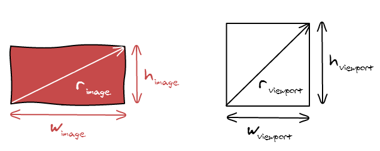

Along with the progress of technology, technology device are emerging in endless, every screen resolution of device are also entirely different. Popular screen resolution device are 1366 × 768, 1024 × 768, and 1280 × 800. The different of screen resolution, the different of resoluton. Layout or intelligibility of web page would different also. So, web page designer would use grid system for make customer could use their web page on any device like mobile phone, desktop or tablat. And the same time the layout of web pages would different too at other divice.

With the development of internet, web browers was more and more, but do you really know the main features and capabilities about modern web browers? First, web browers have many control button like refresh, stop, home, address bar, intergrated search, bookmark, download, history and more. The main capabilities of web browser is use for browse website, webpage, file, video, audio, information or image and we can also use browser for browse html file for create web page. After that, it can also printing web contents on the internet
What is the diffrent of HTML and HTML5? First, first version of HTML is release on year 1995 November 24, HTML5 is fifth and current version of the HTML standard, release at year 2014 ,built for work with more advanced devices like your cell phones and tablets, Then, audio and video are not the part of html and audio and video are integral part of html5 tags such as audio and video tags. Then Websockets are available on HTML5 but not available on HTML. After that, HTML does not allow a Javascript to run in browser. HTML5 allow Javascript run in broswer. We can using HTMLl5 draw shapes like circle, rectangle, triangle, but HTML can't and HTML5 supported by all new browser.

Pixel is the smallest unit with screen base designs, pixel is indivisible. Pixel is actually an LED lamp composed of three sub pixel, each of LED comprising the three RGB components, red, green and blue. It’s was a unit that formation GIF, PNG images, frame, pixel decide the quality of image like 720, 1080, 4k, image of quality more high or the smaller the pixel pitch number, quantity of pixel would even more but having a smaller pixel pitch, we have to increase the number of LED clusters for display. Pixel make possible for site owner and third-party vendors to keep tabs on what’s actually happening on screen.
The advantage of graphic file is the convenience with which the audience can follow along and visualize what we are saying like numbers or trends. Graphic is more forceful and convincing because it emphasizes the main point for everyone. After that, graphic is different with video, it has a reasonably file size, it’s mean we can be viewed a matter easily online as they will load quicker and good quality. Furthermore, some graphic like Gif have ability to show moving picture and thus it is possible to produce animations with computer graphic, it would present image with more completion and comprehend.
The disadvantage of graphic file is graphic is easy clash and delete if involved in the copyright. Next, graphic file were easy for modification so we may meet some graphic with fake incident. Then, for a graphic maker, it was very time-consuming to make and decisions must be made in advance for layout, color, material and costly because they need to depending when create a graphic. After that, some in the audience may be missed by graphics that do not tell the full story and make dispute or squabble. Beyond that, other graphic like Gif can’t be edit, this make it very difficult to make minor alterations to the animation when it has been saved.

Copyright is a form of protection provided by the laws of the US to the author of original works of authorship, it’s including literary, dramatic, musical artistic and certain other intellectual works, if we spread issue on internet web sites without consent permission of author, it’s would involving copyright and may lawsuit by author. Then, some image, musical or video on internet web sites would also be deleted by official if it involving copyright for example, did not get the permission of author, different location of IP address or other. Next, it is common practice for web pages to include links to external web sites, and this does not usually involving copyright, but there are some risk involved if care is not taken, so we should check external web sites if we need to use on our web pages. Otherwise, It’s was also involved copyright if we copy the code, format, design or logo of author’s websites.
A viewport is a polygon viewing region in computer graphics that is meant that viewport is virtual area used by the browser rendering engine to determine how content is scaled and sized when it is initially rendered on the current screen, a viewport is represented by the Viewport class, the Width and Height properties of the rectangle are used by methods for a variety of calculations such as creating a projection matrix using CreatePerspectiveFieldOfView. Viewport dimensions default to the dimensions of the back buffer, but they can be a different size. For example, it will change the view and layout automatic as the size of devices like desktop, tablet and handphone.
HTML(Hyper Text Markup Language) is release at year 1995 November 24, the function of HTML is use for create webpage, web application, text, image, formatting, hyperlink and document. CSS(Cascading Style Sheet) at year 1996 December 17, the function of CSS is a style sheet use for describe the style on HTML document, we can use CSS for create animation effect on webpage, visually engaging webpages, user interfaces for web application or mobile application. Javascript is a language for programming on web and application, block of code designed to perform a particular task.

Hexadecimal use for computer system designer and programmer. It's a position numeral system with base of 16. it is use use sixteen distinct symbol it is 0-9 and A-F(10-15). CSS colours of #000000 is a most dark and #FFFFFF is more light. Then the representaition in Hexadecimal and result is here.